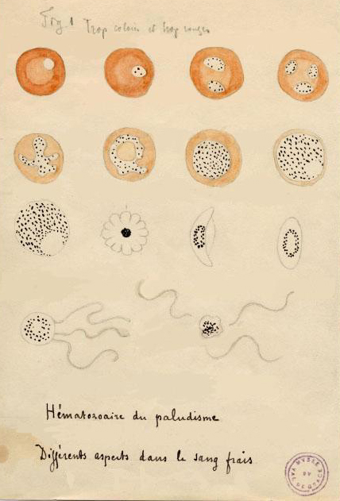
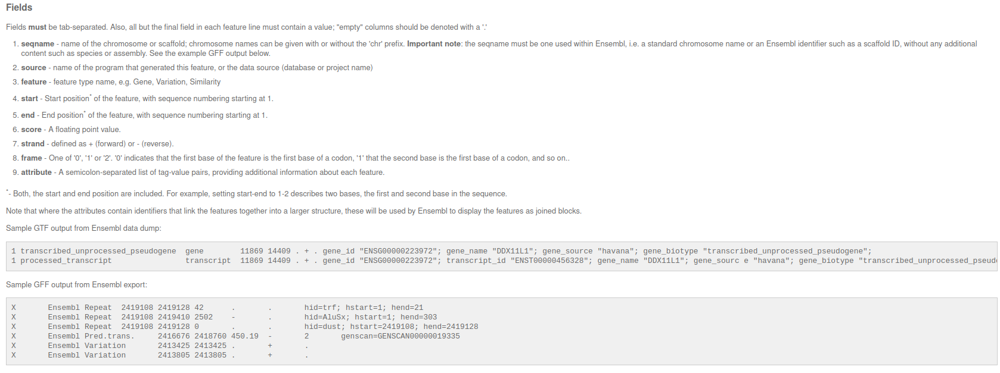
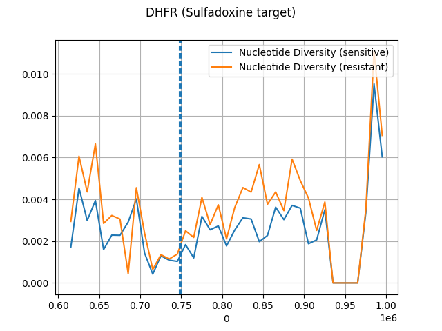
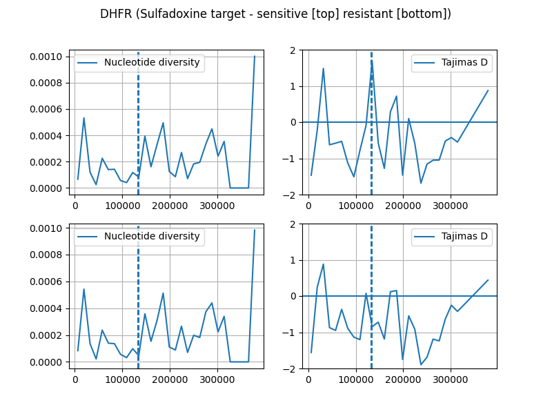

#pip install requests pandas1. Session - MalariaGEN
The first session about the notebook is about exploring
https://www.malariagen.net/.
The database includes information on the genetic diversity of the parasite, including data on single nucleotide polymorphisms (SNPs) and copy number variations (CNVs). It also provides information on the distribution of drug resistance mutations, which is critical for developing effective malaria treatments.
In addition to genomic data, MalariaGen.net also provides access to other types of data, including epidemiological and clinical data. These data are integrated with the genomic data to provide a comprehensive view of the malaria landscape, including information on the distribution of different malaria parasite strains and their associated clinical outcomes.
Overall, MalariaGen.net is an essential resource for researchers and public health officials working towards the goal of eliminating malaria. By providing open access to comprehensive genomic and epidemiological data, MalariaGen.net is helping to drive advances in our understanding of the biology of the malaria parasite and to inform the development of new and effective malaria control strategies.
Data
https://www.dropbox.com/sh/prelp6g1g369uec/AACruu4uCLf-v0PP1La5Yh_6a?dl=0
Outline
We’ll be focussing on the pathogen P. falciparum.

Explore datasets available MalariaGEN related to P. falciparum
We will be looking specifically at the following resources, short variants (SNPs only) and metadata:
- 20,864 samples from 33 countries, but we will filter specifically for african countries (Kenya, …)
- VCF accessable at: ftp://ngs.sanger.ac.uk/production/malaria/Resource/34/Pf7_vcf/ using i.e. FileZilla
- Filter version will be supplied due to large file sizes > 100 GBs (BCFTools) - Resistance status to drugs, like: Chloroquine, Pyrimethamine, Sulfadoxine, Mefloquine, Artemisinin, Piperaquine
- Other metadata, i.e. geographic locationAfter downloading and filtering the data we can load them with the python package
scikit-allel. Next, we will filter, based on the samples of our country of interest and build geneologies withtsinfer. Afterwards, we date the inferred geneologies and calculate summary statistics, like genetic diversity and Tajimas D.
To see more available data sources, of humans, mosquitos or different P. vivax feel free to explore: https://www.malariagen.net/data
Analysis
In the following part of potential analysis path is shown, feel free to follow it and/or modify it.
Metadata
# python package imports
import os, io, requests
from pathlib import Path
import pandas as pd
import numpy as np
import matplotlib.pyplot as plt
#data_directory = Path("../data")# Downloading samples information
samples_url = "https://www.malariagen.net/sites/default/files/Pf7_samples.txt"
samples_metadata = pd.read_csv(io.StringIO(requests.get(samples_url).content.decode('utf-8')), sep="\t")
samples_metadata.head().iloc[:1]| Sample | Study | Country | Admin level 1 | Country latitude | Country longitude | Admin level 1 latitude | Admin level 1 longitude | Year | ENA | All samples same case | Population | % callable | QC pass | Exclusion reason | Sample type | Sample was in Pf6 | |
|---|---|---|---|---|---|---|---|---|---|---|---|---|---|---|---|---|---|
| 0 | FP0008-C | 1147-PF-MR-CONWAY | Mauritania | Hodh el Gharbi | 20.265149 | -10.337093 | 16.565426 | -9.832345 | 2014.0 | ERR1081237 | FP0008-C | AF-W | 82.16 | True | Analysis_set | gDNA | True |
african_countries = ['Benin', 'Burkina Faso','Cameroon', 'Gabon' ,'Cameroon', 'Côte d\'Ivoire','Mozambique', 'Democratic Republic of the Congo','Sudan', 'Ethiopia', 'Gambia', 'Ghana', 'Guinea', 'Kenya', 'Madagascar', 'Malawi', 'Mali', 'Mauritania', 'Nigeria', 'Senegal', 'Tanzania', 'Uganda']
non_african_countries = ['Bangladesh', 'Cambodia', 'Colombia', 'India', 'Indonesia', 'Laos', 'Myanmar', 'Papua New Guinea', 'Peru', 'Thailand', 'Venezuela', 'Vietnam']
african_subset = ['Kenya', 'Ethiopia', 'Tanzania', 'Uganda']Next we identify the sample ids, which we want to explore:
# form sample table above create mask to filter the table to only contain rows of interest
samples_metadata_mask = [True if criteria in african_subset else False for criteria in samples_metadata.Country]
samples_metadata = samples_metadata[samples_metadata_mask]
# quality control filtering
samples_metadata = samples_metadata[samples_metadata["QC pass"]]
# we only look at genomic DNA (gDNA) for now
samples_metadata_mask = [True if criteria in ["gDNA"] else False for criteria in samples_metadata["Sample type"]]
samples_metadata = samples_metadata[samples_metadata_mask]
# reseting tables indices
samples_metadata = samples_metadata.reset_index(drop=True)samples_metadata_kenya = samples_metadata[samples_metadata["Country"] == "Kenya"]
print(f"Number of gDNA samples in Kenya with QC pass True {samples_metadata_kenya.shape[0]}.")Number of gDNA samples in Kenya with QC pass True 321.Save Kenyan samples ids to txt file:
kenyian_samples = samples_metadata_kenya["Sample"].tolist()
#samples_ids = samples_metadata_kenya.Sample.tolist()
#with open(data_directory/"kenyan_sample_ids.txt", "a") as f:
# for samples_id in samples_ids:
# f.write(samples_id + "\n")What is an GFF file (General Feature Format)
Standardized file format, which contains information where to find what genomic element in the genome.

GFF file analysis
# path needs to be adapted
gff_path = Path("../../Pfalciparum_replace_Pf3D7_MIT_v3_with_Pf_M76611.gff")
gff = pd.read_csv(gff_path, sep="\t", comment="#", header=None)
# renaming some columns
gff.columns = ["chr", 1, "region", "start", "end", 4, "strand", 5, "desc"]
# filtering for gene regions
gff_genes = gff[gff["region"] == "gene"]
gff_genes.reset_index(drop=True, inplace=True)Next we extract genes related to resistance of Malaria drugs.
import re
loci_locations = []
locis = ["crt", "dhfr", "dhps", "mdr1", "Kelch13", "Plasmepsin"]
for loci in locis:
pattern = 'Name=(.*' + loci.lower() + '.*|.*' + loci.upper() + '.*|' + loci + ').*;'
mask = [True if len(re.findall(pattern, desc)) > 0 else False for desc in gff_genes["desc"]]
loci_locations.append(gff_genes[mask])
loci_locations = pd.concat(loci_locations)
# Plasmepsin not found (mostlikely different name)
loci_locations.reset_index(drop=True, inplace=True)for _, item in loci_locations.iterrows():
print(item["chr"], item["start"], item["end"], item["end"] - item["start"], item["desc"])Pf3D7_07_v3 402385 406341 3956 ID=PF3D7_0709000;Name=CRT;previous_systematic_id=MAL7P1.27
Pf3D7_04_v3 747897 750065 2168 ID=PF3D7_0417200;Name=DHFR-TS;previous_systematic_id=PFD0830w,MAL4P1.161;synonym=PfDHFR-TS%3Bcurrent%3Dfalse
Pf3D7_08_v3 547896 551057 3161 ID=PF3D7_0810800;Name=PPPK-DHPS;previous_systematic_id=PF08_0095
Pf3D7_05_v3 955955 963095 7140 ID=PF3D7_0523000;Name=MDR1;previous_systematic_id=PFE1150w,MAL5P1.230;synonym=Pgh1,ABCB1
Pf3D7_13_v3 1724600 1727877 3277 ID=PF3D7_1343700;Name=Kelch13;previous_systematic_id=PF13_0238;synonym=K13Loading resistance status metadata
resistance_url = "https://www.malariagen.net/sites/default/files/Pf7_inferred_resistance_status_classification.txt"
resistance_status = pd.read_csv(io.StringIO(requests.get(resistance_url).content.decode('utf-8')), sep="\t")
resistent_samples = []
sensitive_samples = []
undetermined_samples = []
for sample in kenyian_samples:
sulfadoxine = resistance_status[resistance_status["Sample"] == sample]["Sulfadoxine"]
if len(sulfadoxine) == 1:
sulfadoxine = sulfadoxine.item()
if sulfadoxine == "Resistant":
resistent_samples.append(sample)
if sulfadoxine == "Sensitive":
sensitive_samples.append(sample)
else:
undetermined_samples.append(sample)What is a VCF file (Variant Call Format)?
The Variant Call Format (VCF) specifies the format of a text file used in bioinformatics for storing gene sequence variations. The format has been developed with the advent of large-scale genotyping and DNA sequencing projects, such as the 1000 Genomes Project.
##fileformat=VCFv4.3
##fileDate=20090805
##source=myImputationProgramV3.1
##reference=file:///seq/references/1000GenomesPilot-NCBI36.fasta
##contig=<ID=20,length=62435964,assembly=B36,md5=f126cdf8a6e0c7f379d618ff66beb2da,species="Homo sapiens",taxonomy=x>
##phasing=partial
##INFO=<ID=NS,Number=1,Type=Integer,Description="Number of Samples With Data">
##INFO=<ID=DP,Number=1,Type=Integer,Description="Total Depth">
##INFO=<ID=AF,Number=A,Type=Float,Description="Allele Frequency">
##INFO=<ID=AA,Number=1,Type=String,Description="Ancestral Allele">
##INFO=<ID=DB,Number=0,Type=Flag,Description="dbSNP membership, build 129">
##INFO=<ID=H2,Number=0,Type=Flag,Description="HapMap2 membership">
##FILTER=<ID=q10,Description="Quality below 10">
##FILTER=<ID=s50,Description="Less than 50% of samples have data">
##FORMAT=<ID=GT,Number=1,Type=String,Description="Genotype">
##FORMAT=<ID=GQ,Number=1,Type=Integer,Description="Genotype Quality">
##FORMAT=<ID=DP,Number=1,Type=Integer,Description="Read Depth">
##FORMAT=<ID=HQ,Number=2,Type=Integer,Description="Haplotype Quality">
#CHROM POS ID REF ALT QUAL FILTER INFO FORMAT NA00001 NA00002 NA00003
20 14370 rs6054257 G A 29 PASS NS=3;DP=14;AF=0.5;DB;H2 GT:GQ:DP:HQ 0|0:48:1:51,51 1|0:48:8:51,51 1/1:43:5:.,.
20 17330 . T A 3 q10 NS=3;DP=11;AF=0.017 GT:GQ:DP:HQ 0|0:49:3:58,50 0|1:3:5:65,3 0/0:41:3
20 1110696 rs6040355 A G,T 67 PASS NS=2;DP=10;AF=0.333,0.667;AA=T;DB GT:GQ:DP:HQ 1|2:21:6:23,27 2|1:2:0:18,2 2/2:35:4
20 1230237 . T . 47 PASS NS=3;DP=13;AA=T GT:GQ:DP:HQ 0|0:54:7:56,60 0|0:48:4:51,51 0/0:61:2
20 1234567 microsat1 GTC G,GTCT 50 PASS NS=3;DP=9;AA=G GT:GQ:DP 0/1:35:4 0/2:17:2 1/1:40:3Extracting gene region of interest from VCF file
To create a vcf file which contains only PASS bi-allelic coding SNPs with VQSLOD > 6:
bcftools view \
--include 'FILTER="PASS" && N_ALT=1 && CDS==1 && TYPE="snp" && VQSLOD>6.0' \
--regions Pf3D7_04_v3:600000-1000000 \
--output-type z \
--output-file DHFR-TS.vcf.gz \
Pf3D7_04_v3.pf7.vcf.gz
bcftools index --tbi DHFR-TS.vcf.gz
bcftools view \
--include 'FILTER="PASS" && N_ALT=1 && CDS==1 && TYPE="snp" && VQSLOD>6.0' \
--regions Pf3D7_05_v3:800000-1100000 \
--output-type z \
--output-file MDR1_surrounding_region.vcf.gz \
Pf3D7_05_v3.pf7.vcf.gz
bcftools index --tbi MDR1_surrounding_region.vcf.gz
Loading VCF file and calculating nucleotide diversity (Tajimas Pi)
#pip install tsinfer tsdate scikit-allel numba matplotlib seabornimport tsinfer, tsdate, allel
import numpy as np
import matplotlib.pyplot as plt
import seaborn as sns# change the path to the file accordingly
# in windows the file path looks something like 'C:/mydir'
vcf_file = str("../../datasets/malaria-chromosomes/DHFR-TS_surrounding_region.vcf.gz")
callset = allel.read_vcf(vcf_file, fields=['samples', 'calldata/GT', 'variants/ALT', 'variants/CHROM',
'variants/FILTER_PASS', 'variants/ID', 'variants/POS',
'variants/QUAL', 'variants/REF','calldata/GT','calldata/PS'])
gt = allel.GenotypeArray(callset['calldata/GT'])
phase_sets = callset['calldata/PS']
pos = callset["variants/POS"]def get_genotypes(samples, genotypes):
mask = [True if sample in samples else False for sample in callset["samples"]]
genotypes = genotypes[:,mask]
gt_np = np.array(genotypes.to_haplotypes())
return gt_npgt_kenyian = get_genotypes(kenyian_samples, gt)
gt_resistant_kenyian = get_genotypes(resistent_samples, gt)
gt_sensitive_kenyian = get_genotypes(sensitive_samples, gt)ac = gt_sensitive_kenyian
pi, windows, n_bases_sen, counts_sen = allel.windowed_diversity(pos=pos, ac=ac, size=10_000, start=pos[0])
window_start = pd.DataFrame(windows)[0]
sns.lineplot(x=window_start, y=pi, label="Nucleotide Diversity (sensitive)")
ac = gt_resistant_kenyian
pi, windows, n_bases_res, counts_res = allel.windowed_diversity(pos=pos, ac=ac, size=10_000, start=pos[0])
window_start = pd.DataFrame(windows)[0]
sns.lineplot(x=window_start, y=pi, label="Nucleotide Diversity (resistant)")
plt.axvline(747897, ls='--')
plt.axvline(750065, ls='--')
plt.grid(True)
plt.suptitle("DHFR (Sulfadoxine target)")
#plt.savefig("./images/dhfr_scikit.png")
An alternative possibilty is to go through constructing the genealogies
def get_tree_sequence_from_genotypes(samples, genotypes):
mask = [True if sample in samples else False for sample in callset["samples"]]
genotypes = genotypes[:,mask]
gt_np = np.array(genotypes.to_haplotypes())
new_pos = pos - pos[0]
num_sites = gt_np.shape[0]
with tsinfer.SampleData(sequence_length=new_pos[-1]+1) as sample_data:
for i, site in enumerate(gt_np):
sample_data.add_site(new_pos[i], site, ancestral_allele=0)
inferred_ts = tsinfer.infer(sample_data)
#inferred_ts_reduced = reduce_tree_sequence(inferred_ts, 500)
inferred_ts = inferred_ts.simplify(keep_unary=False)
inferred_dated_ts= tsdate.date(inferred_ts, Ne=2000, mutation_rate=2 * 10e-4)
return inferred_dated_tsts_all = get_tree_sequence_from_genotypes(kenyian_samples, gt)
ts_resistant = get_tree_sequence_from_genotypes(resistent_samples, gt)
ts_sensitive = get_tree_sequence_from_genotypes(sensitive_samples, gt)def get_stats(ts, wins):
tajima = ts.Tajimas_D(windows=wins, mode="site")
diversity = ts.diversity(windows=wins, mode="site")
return diversity, tajimaL = ts_all.sequence_length
wins = np.linspace(0, L, 31)
mids = (wins[1:] + wins[:-1]) / 2
diversity, tajima = get_stats(ts_all, wins)
diversity_res, tajima_res = get_stats(ts_resistant, wins)
diversity_sens, tajima_sens = get_stats(ts_sensitive, wins)fig, axs = plt.subplots(2, 2, figsize=(8, 6))
ax = axs[0][0]
sns.lineplot(x=mids, y=diversity_sens, ax=ax, label="Nucleotide diversity")
ax.axvline(747897-pos[0], ls='--')
ax.axvline(750065-pos[0], ls='--')
ax.grid(True)
ax = axs[0][1]
sns.lineplot(x=mids, y=tajima_sens, ax=ax, label="Tajimas D")
ax.set_ylim(-2, 2)
ax.axhline(0)
ax.axvline(747897-pos[0], ls='--')
ax.axvline(750065-pos[0], ls='--')
ax.grid(True)
ax = axs[1][0]
sns.lineplot(x=mids, y=diversity_res, ax=ax, label="Nucleotide diversity")
ax.axvline(747897-pos[0], ls='--')
ax.axvline(750065-pos[0], ls='--')
ax.grid(True)
ax = axs[1][1]
sns.lineplot(x=mids, y=tajima_res, ax=ax, label="Tajimas D")
ax.set_ylim(-2, 2)
ax.axhline(0)
ax.axvline(747897-pos[0], ls='--')
ax.axvline(750065-pos[0], ls='--')
ax.grid(True)
fig.suptitle("DHFR (Sulfadoxine target - sensitive [top] resistant [bottom])")
#plt.savefig("./images/dhfr.png")